Build and deploy an Azure app with your agent team
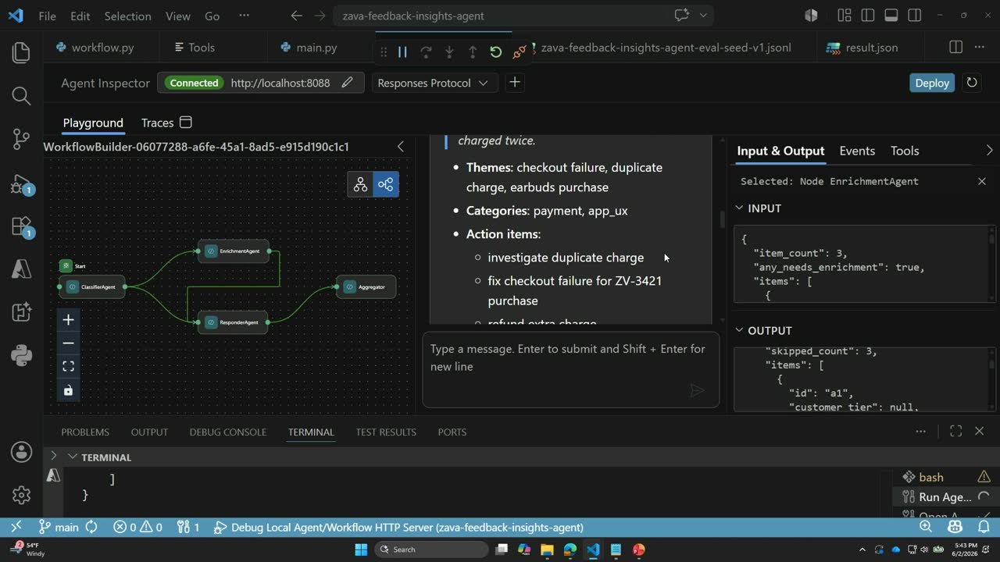
Official description
In 25 minutes, we’ll go from a blank repo to a live Azure AI app—built and deployed by a team of GitHub Copilot agents. Watch Copilot plan architecture, generate code, provision Azure, and deploy live using Copilot Agents and Skills. Leave with a blueprint for your agent driven coding workflow for Azure. Seating for this session is first-come, first-served. Add it to your schedule to plan your day and arrive early to secure a spot.
Summary
Overview
A live, 25-minute demonstration of building and deploying a multi-agent Azure AI application entirely through GitHub Copilot agents and Foundry tooling, without manually writing code. Rong Lu builds a "Zava" customer-insights agent team in VS Code while Brady Gaster adds a React front end and deploys to Azure using a multi-agent Copilot framework called Squad.
Key announcements
- Zava customer-insights multi-agent system (00:01:12m05s
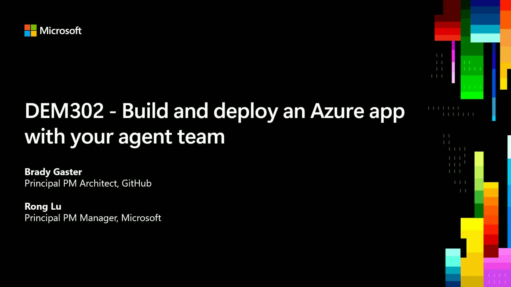
m10s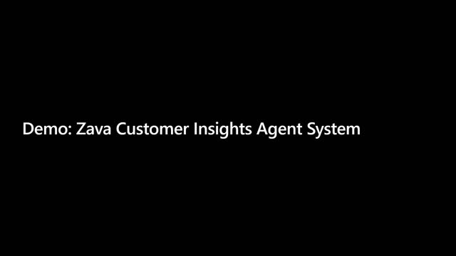
p05s p10s) — A team of four agents (classifier, enrichment, triage, aggregate) that analyzes customer feedback sentiment and triggers actions such as drafting replacement emails.
p10s) — A team of four agents (classifier, enrichment, triage, aggregate) that analyzes customer feedback sentiment and triggers actions such as drafting replacement emails. - Foundry skill in the Foundry Toolkit VS Code extension (00:05:06
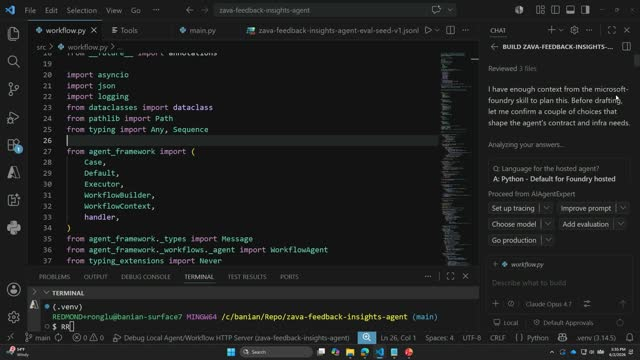
m05sm10s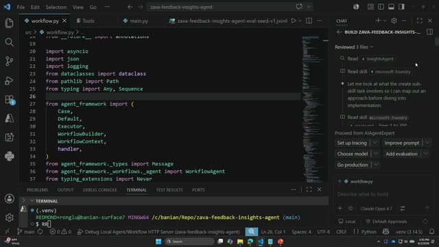
p05s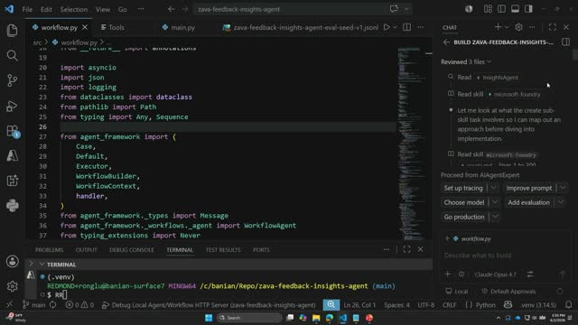
p10s) — Supplies Copilot with up-to-date knowledge of the new Microsoft Agent Framework and Microsoft Foundry service so it can scaffold agents correctly. - Foundry toolbox with unified endpoint and authentication (00:08:09
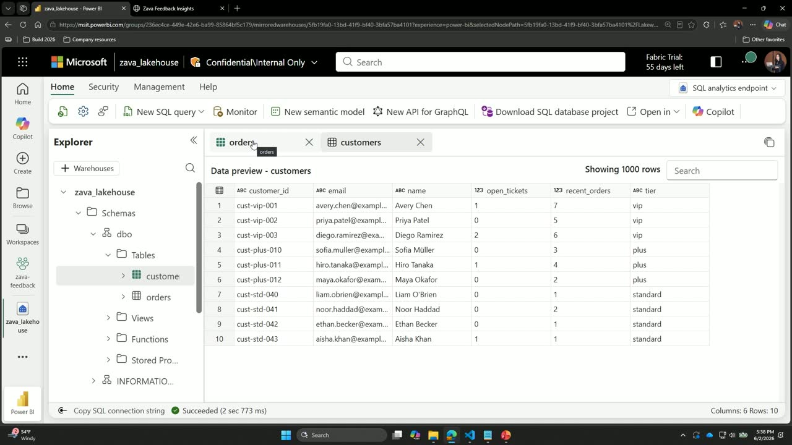
m05s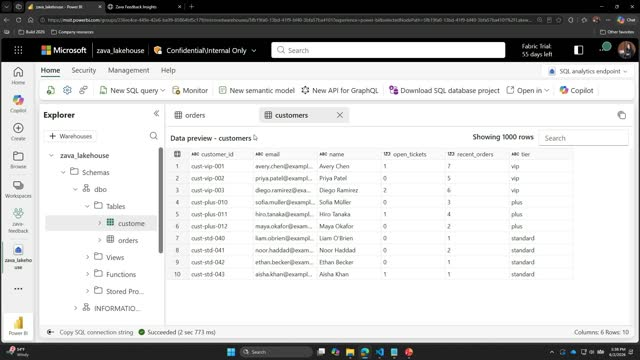
m10s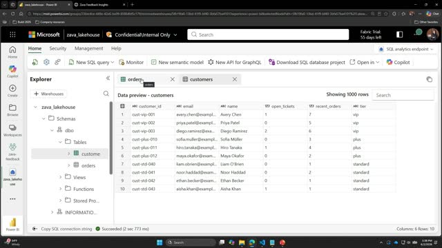
p05s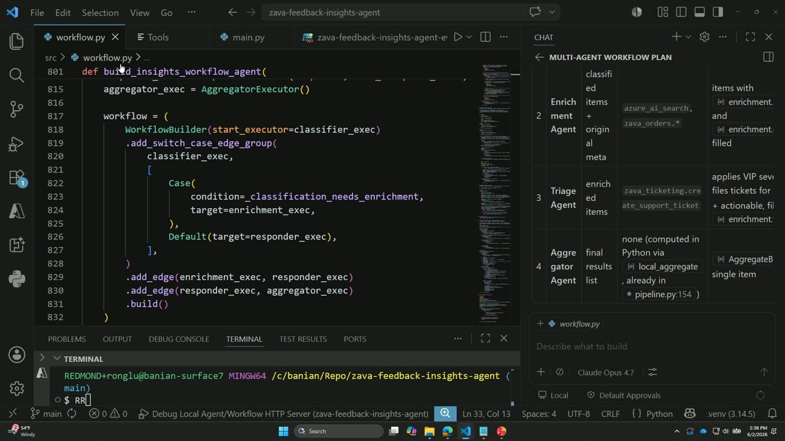
p10s) — Packages multiple tools (Azure AI Search over a product catalog and a Fabric IQ connector to customer/order data) behind a single endpoint, attached only to the enrichment agent. - Agent Inspector tool (00:10:22
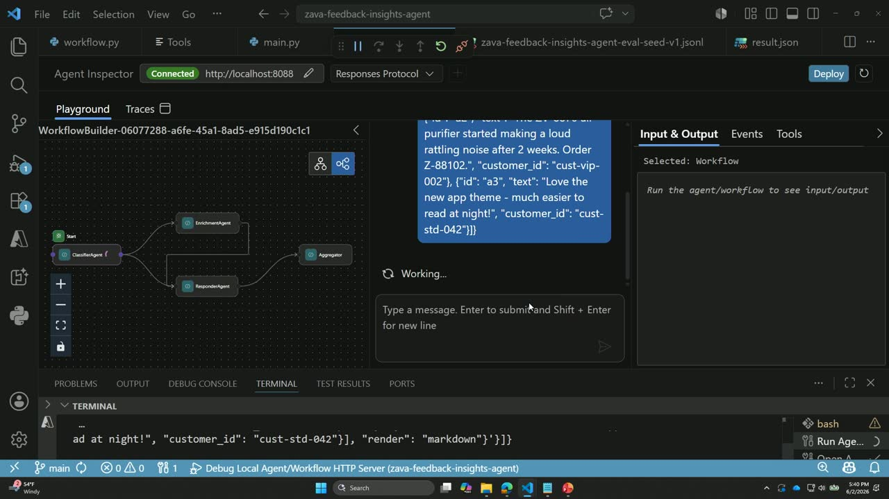
m05s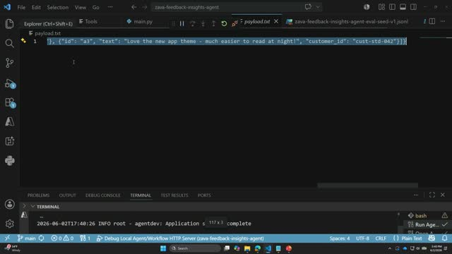
m10sp05s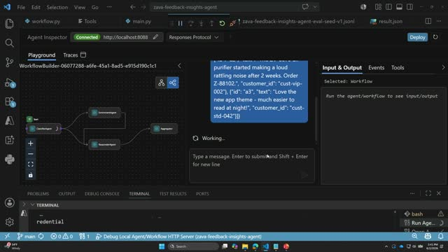
p10s) — Part of the Foundry Toolkit VS Code extension; visualizes agent workflows live, acts as a playground, captures runtime events, and supports normal debugging. - Copilot-generated evaluations via Foundry MCP server (00:13:09
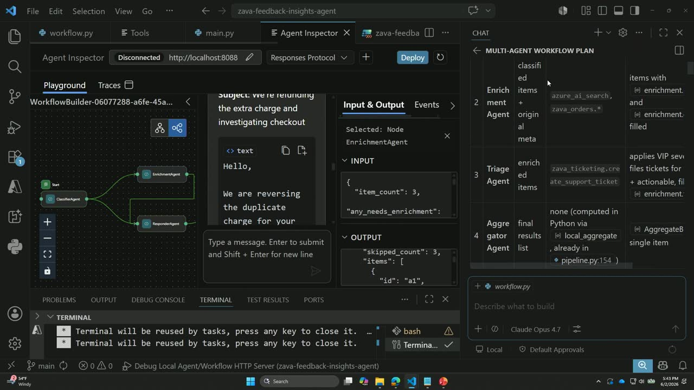
m05s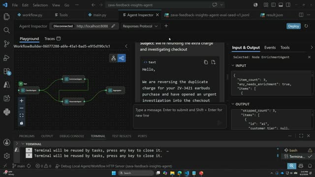
m10s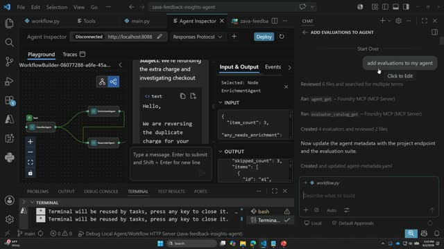
p05s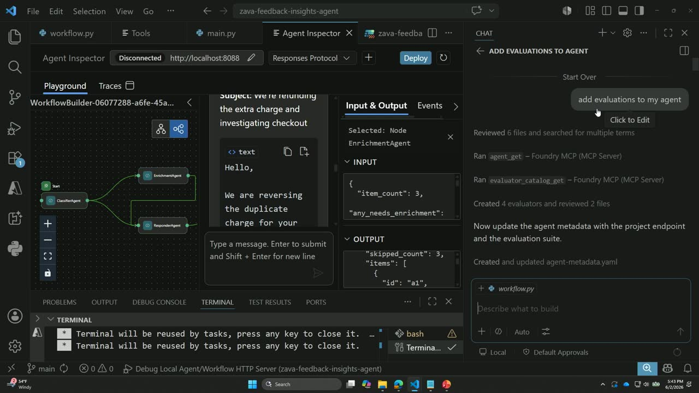
p10s) — Copilot generated a 10-row test dataset and evaluators and submitted the evaluation directly to the Foundry service. - Deploy hosted agent command (00:14:55
 m05s
m05s m10s
m10s p05s
p05s p10s) — A wizard pushes the locally running agent to the Foundry service as a fully managed, observable hosted agent, with log streaming that Copilot can read to fix errors.
p10s) — A wizard pushes the locally running agent to the Foundry service as a fully managed, observable hosted agent, with log streaming that Copilot can read to fix errors. - Squad multi-agent framework for GitHub Copilot (00:16:41
 m05s
m05s m10s
m10s p05s
p05s p10s) — An open-source tool Gaster built with Tamir [inferred] that spins up a team of specialized Copilot agents, each with a distinct job, to reach results faster than single-threaded conversation.
p10s) — An open-source tool Gaster built with Tamir [inferred] that spins up a team of specialized Copilot agents, each with a distinct job, to reach results faster than single-threaded conversation.
{kind=link}
{kind=link}
{kind=link}
{kind=link}
{kind=link}
{kind=link}
{kind=link}
{kind=link}
{kind=link}
{kind=link}
{kind=link}
{kind=link}
{kind=link}
{kind=link}
{kind=link}
{kind=link}
{kind=link}
{kind=link}
{kind=link}
Topics covered
- Plan mode in Copilot to discuss architecture before implementation to reduce cost
- Orchestrating four agents with conditional flows in a single workflow function (Microsoft Agent Framework)
- Connecting Foundry-hosted agents to Microsoft Fabric data via the Foundry toolbox
- Running agents locally against cloud Foundry models and tools before deployment
- Scaling from prototype to production through formal evaluations
- Azure MCP server and Azure skills (markdown files instructing Copilot how to combine MCP tools)
- Provisioning Azure Foundry and Azure Container Apps infrastructure (IaC) authored by Squad agents
- Deploying front end and back end with AZD, including a post-deployment hook for Foundry-specific steps
- Reusing one Foundry model instance across two compute hosts authenticated via managed identity
- Auto-generated reports documenting agent work, tools, and skills consulted
Notable quotes
"I did not write a single line of code here, but I will show you real quick the code that Copilot generated." — Rong Lu
"If you just send all the agents the same instructions, they're going to fight over work like Hungry Hungry Hippos." — Brady Gaster
"Squad wrote that infra in the hotel room last night because I'm too lazy to do it myself." — Brady Gaster
Products and tools mentioned
- GitHub Copilot (app and CLI)
- Squad (multi-agent framework for GitHub Copilot)
- VS Code
- Microsoft Agent Framework
- Microsoft Foundry service
- Foundry Toolkit VS Code extension
- Foundry skill / Foundry MCP server
- Agent Inspector
- Foundry toolbox
- Azure AI Search
- Microsoft Fabric / Fabric IQ connector
- Azure MCP server
- Azure Container Apps
- Azure Developer CLI (AZD)
- Azure Log Analytics
- React
- Managed identity (Azure)
Speakers featured
- Brady Gaster — GitHub (joined a couple weeks prior); co-creator of Squad
- Rong Lu — Program Manager, Microsoft
Frames
{kind=link}
{kind=link}
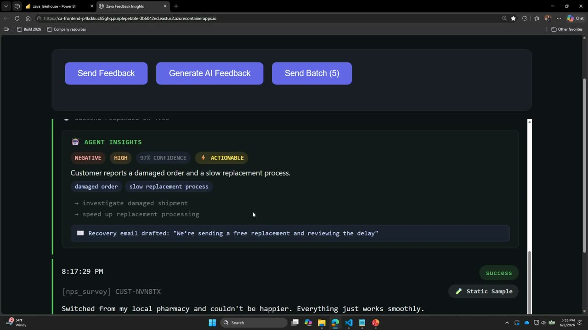
{kind=link}
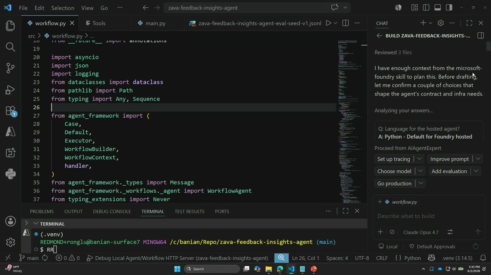
{kind=link}
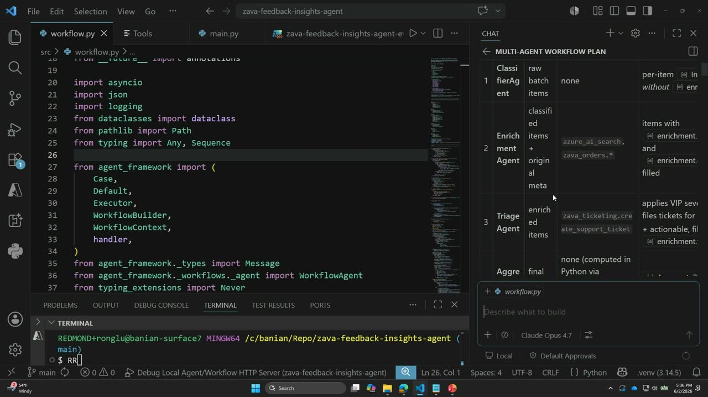
{kind=link}
{kind=link}
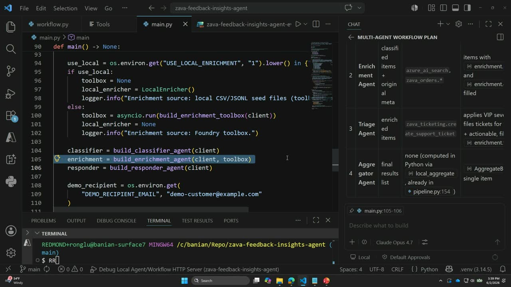
{kind=link}
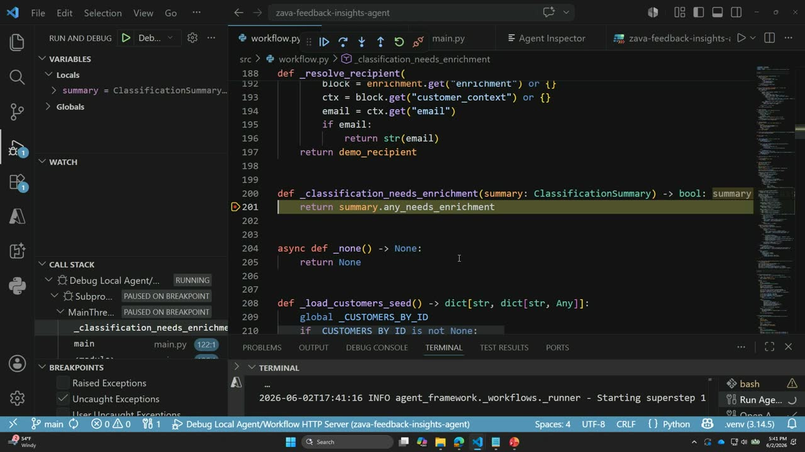
{kind=link}
{kind=link}
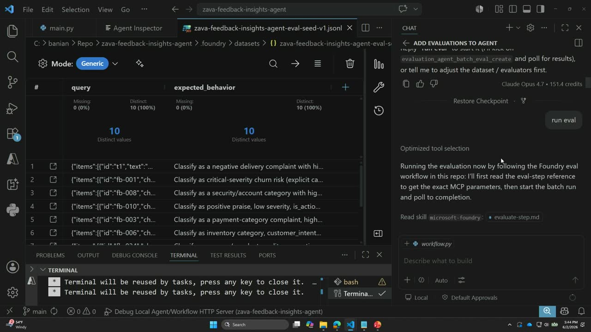
{kind=link}
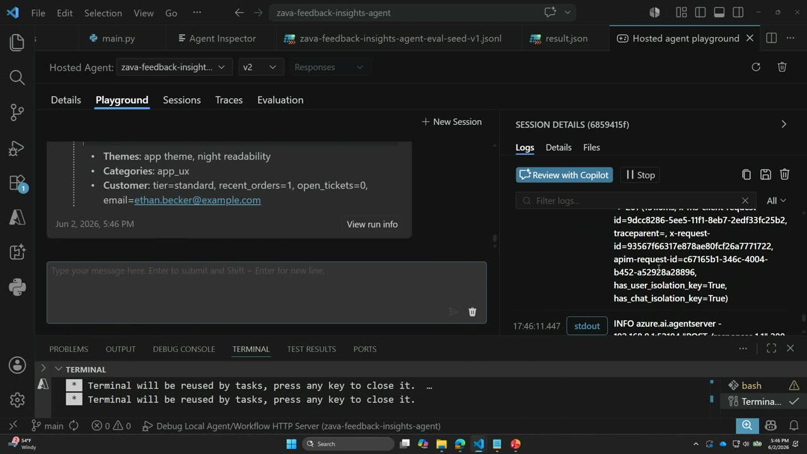
{kind=link}
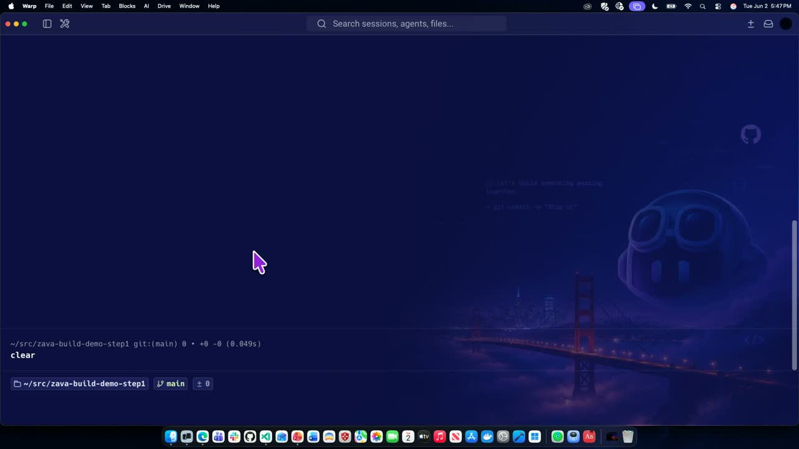
{kind=link}
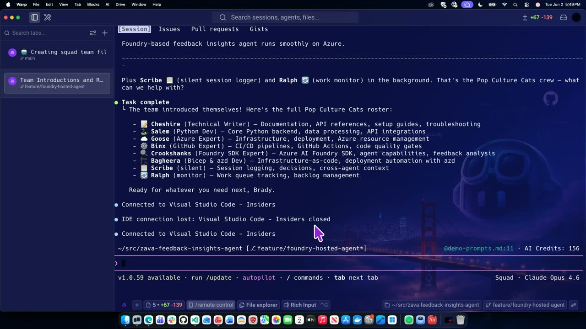
{kind=link}
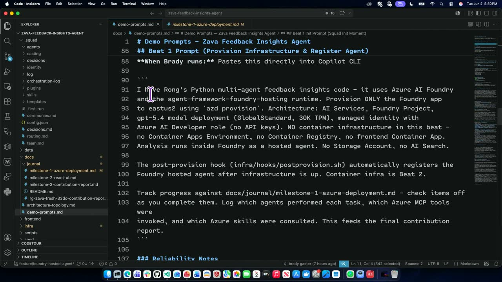
{kind=link}
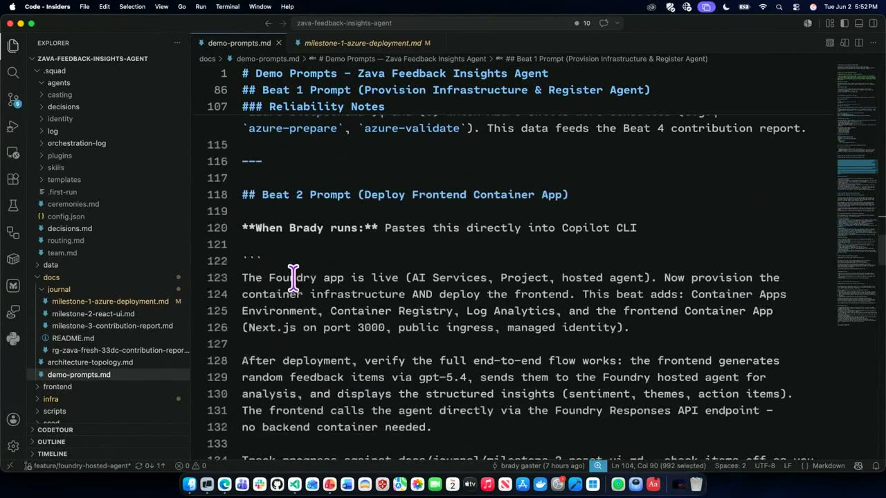
{kind=link}
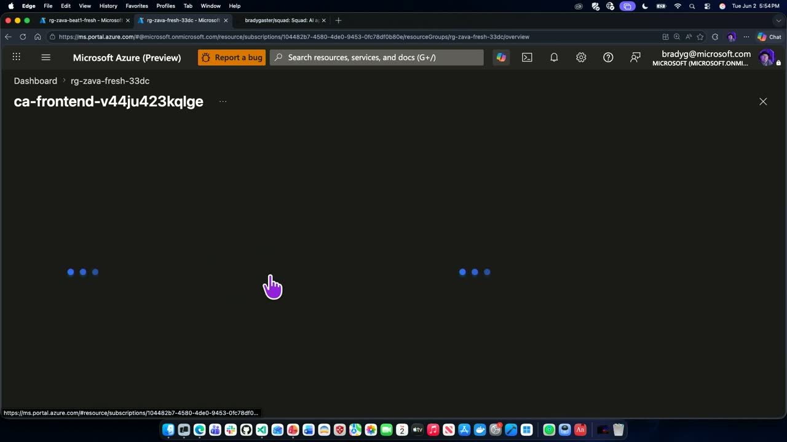
Transcript
Show / hide transcript (33,543 chars)
[00:00:01] All right. [00:00:03] Thank you for your patience, everybody. [00:00:05] This is our last demo in this theater. [00:00:08] For tonight, we are going to talk about building and [00:00:11] deploying an Azure App Agent, an Azure app with your [00:00:14] agent team and the floor is yours, Don. [00:00:20] No one. [00:00:21] It's not loud. [00:00:22] Testing, testing, testing. [00:00:27] Are we on? [00:00:27] Are we on we're on we're on testing test there [00:00:30] we go hey y'all how's it going today and today [00:00:33] you ready to go anybody ready for the show after [00:00:36] this chain smokers going to be awesome we're going to [00:00:39] go long since we're in so we're going to take [00:00:42] our time all right nobody's after us all right I'd [00:00:46] like to introduce myself I'm Brady Gaster. [00:00:48] I work at GitHub as of a couple weeks ago. [00:00:50] I'm really happy to be there like to say hi [00:00:52] to everybody and I'll turn it over to Ron. [00:00:54] Oh, I'm. [00:00:55] Ron and I'm a PM at Microsoft and today we're [00:00:58] excited to be here to do our demo session here. [00:01:02] Our goal is to get into a live demo in [00:01:05] the first minute, so let's get to it. [00:01:09] So what are we going to do today is using [00:01:12] the 25 minutes we have here to build a Zava [00:01:15] customer Insights agent system together. [00:01:19] So as Zava, this is an online retailer, we really [00:01:23] care about customers. [00:01:24] We want to take good care of our customer feedback [00:01:27] and that's when we started building this agent to help [00:01:31] us understand customer feedback and take actions on it. [00:01:35] All right, let's get into this. [00:01:41] I am going to do everything in VS Code. [00:01:45] By everything I really mean it. [00:01:47] So you guys can tell me if I ever step [00:01:50] out of VS Code? [00:01:51] All right. [00:01:52] So, oh, actually before I get to that, I should [00:01:55] show you the end product that we are building here. [00:01:59] OK, this is not obvious code, but this is a [00:02:02] front end website that's connected to the agent in the [00:02:06] back end that runs in Microsoft Foundry. [00:02:09] So what this agent is doing, actually it's a team [00:02:13] of agents here. [00:02:15] It's is it's able to understand customer, customer feedback, analyze [00:02:20] them and give us give us insights on customer sentiment. [00:02:25] So for example, I have here, you know, customers is [00:02:30] talking about price being reasonable, but delivery was slow. [00:02:36] So this is kind of like a, a mixed feedback [00:02:39] of positive and negative sentiment. [00:02:42] The second one is talking about app crashed which is [00:02:46] obviously a negative feedback and the third one is my [00:02:51] order arrived damaged very bad. [00:02:53] So our agent was able to identify this being a [00:02:57] negative feedback and not only it told us about this [00:03:01] insight, it also took actions on them. [00:03:04] It connected to the customers and orders information we have [00:03:09] that lives in Microsoft Fabric data platform and connect that [00:03:14] feedback to that specific customer, look up their orders and [00:03:18] determined that we need to provide a free replacement for [00:03:23] this customer. [00:03:24] So it triggered a bunch of actions all on the [00:03:28] on the on the agent side within this agent system [00:03:32] by having multiple agents working together. [00:03:35] So with that, let me get into VS Code and [00:03:38] show you how we did it. [00:03:40] So first of all, when Brady and I started working [00:03:43] on this system, the first thing I did was went [00:03:47] to VS Code and Copilot and that is literally the [00:03:50] prompt I sent it. [00:03:52] I said I wanted to build a production ready Foundry [00:03:55] host agent named as using the Microsoft Agent Framework. [00:03:59] Very brief. [00:04:00] So what I usually do is I will switch to [00:04:04] this plan mode, right? [00:04:06] So I want to get the agent to talk with [00:04:09] me, copilot to discuss things with me, to have a [00:04:12] plan laid out before it goes and implements things. [00:04:16] So that's a lot cheaper. [00:04:18] So what I did was just basically to kick this [00:04:21] off and I won't have time to show everything live. [00:04:26] So I'm just going to show you the actual history [00:04:29] I had from a week or so ago when I [00:04:32] when I did this so exam, same prompt and the [00:04:35] copilot try to make sense of this. [00:04:38] And you know, Microsoft agent framework is really wonderful. [00:04:42] This open source agent framework that helps you orchestrate multi [00:04:46] agents. [00:04:47] But it is very new and so is Microsoft Foundry [00:04:50] service, which is also a new thing that we are [00:04:54] building actively. [00:04:56] So Copilot needs to learn about all these things. [00:04:59] When I said use Microsoft Agent Framework or Host Agent, [00:05:03] it needs to learn about these new technologies. [00:05:06] So what it did was it actually pulled up this [00:05:10] Foundry skill that we ship with the Foundry Toolkit VS [00:05:14] Code extension for the latest knowledge about the service, about [00:05:18] the framework. [00:05:20] Then it's able to understand how it will go about [00:05:23] building this agent. [00:05:24] So that was how I started the first I was [00:05:27] just going to do sentiment analysis, which is very simple, [00:05:31] send my agent, you know, piece of cosmic feedback. [00:05:35] It returns a score for negative or positive sentiment score. [00:05:40] But then I figured why not build a multi agent [00:05:45] system composing of multiple agents. [00:05:49] And this is how we started iterating with Copilot and [00:05:53] figure out this plan that included four different agents. [00:05:59] So not only it's going to classify whether there's a [00:06:03] negative or positive feedback, it's going to look up our [00:06:07] data in the back end. [00:06:08] This is what the second enrichment agent is going to [00:06:12] do is it will look up, OK, which customer is [00:06:14] this? [00:06:15] Is this AVIP customer, you know, what is the status [00:06:19] of their order, what is happening there? [00:06:22] So this is what's happening with the second agent. [00:06:25] And a triage agent will then decide, you know, do [00:06:28] I need to draft an e-mail to the customer? [00:06:31] And then lastly, the aggregate agent is going to put [00:06:34] everything together. [00:06:35] So that's our agent system, a team of agents. [00:06:40] Then of course, Copilot scaffolded everything for me. [00:06:43] I did not write a single line of code here, [00:06:46] but I will show you real quick the code that [00:06:50] Copilot generated. [00:06:51] So first of all, as I mentioned, we're using the [00:06:54] Microsoft Agent framework, so this is the important statement here. [00:06:58] But I want to show you how we orchestrated these [00:07:01] four different agents. [00:07:03] And literally this is the line of code that composes [00:07:07] everything together. [00:07:08] So I have 4 different agents, 4 lines of code [00:07:11] here. [00:07:12] And this is how this single line that says workflow [00:07:15] that composes everything together, you can see I have conditions [00:07:20] in there and different flows between different agents. [00:07:24] That's all defined in this one function. [00:07:29] All right. [00:07:29] So with that, I kind of have the the skeleton [00:07:33] of my agent system. [00:07:34] But remember for the second agent, which is enrichment, we [00:07:38] wanted to look up our customer order and customer information [00:07:42] that lives in Fabric. [00:07:44] And this is what our data looks like. [00:07:50] Fabric is really wonderful. [00:07:51] This is 1 platform where all of your data can [00:07:54] live in. [00:07:55] And just like you guys for Java, we also have [00:07:58] data in here. [00:08:00] Now the question comes in, if I have my agent [00:08:03] running in Microsoft Foundry service, how do I connect back [00:08:08] to the Fabric data? [00:08:09] So this is when Foundry Tools and Toolbox comes in. [00:08:13] So I want to show you real quick how I [00:08:17] set that up so in VS Code I am able [00:08:20] to look at the toolbox I have defined. [00:08:23] So toolbox is really just a way to package various [00:08:27] tools into a single entity that you can interact with [00:08:32] from your program. [00:08:34] I really love that with toolbox you can have all [00:08:38] sorts of different tools or packaging into one. [00:08:41] So in this case I have Azure AI Search which [00:08:45] index over a product catalog and then I have the [00:08:48] second one which is a Fabric IQ connector that links [00:08:52] back to my customer and orders data. [00:08:56] And with that I can access this toolbox via a [00:09:00] unified endpoint. [00:09:01] So just one endpoint and a unified authentication. [00:09:05] So just connect once I'm able to connect to everything [00:09:08] in this toolbox. [00:09:10] So just to show you real quick, this is this [00:09:13] line is how I can attach that toolbox I've defined [00:09:17] to the enrichment agent and everything else. [00:09:20] All other agents don't have that capability, but that one [00:09:24] agent is able to access our internal data. [00:09:27] So with that, let's run this agent. [00:09:33] So remember, this is all happening locally. [00:09:36] My code is on my local disk. [00:09:38] Of course, it's connecting to a Foundry model that's in [00:09:42] the cloud. [00:09:44] It's connecting to this toolbox, which is also part of [00:09:47] the Foundry service. [00:09:48] But my entire agent right now runs locally. [00:09:52] So what just happened here? [00:09:55] This might be a new UI that we're looking at [00:09:58] here. [00:09:59] Let me kick this off and then I'll explain. [00:10:04] Oh, I need to get my test data ready. [00:10:11] Test data. [00:10:13] All right, so for now, I'm just going to send [00:10:15] it in Jason format, really, really raw format, which Brady [00:10:18] is going to connect to the to the app later. [00:10:22] So this is tool, a tool called Agent Inspector that [00:10:25] is part of the Foundry Toolkit VS Code extension. [00:10:28] It serves multiple purposes. [00:10:30] First of all, as you see on the left hand [00:10:33] side, it serves as a visualizer. [00:10:36] If you have multiple agents in your workflow, it really [00:10:39] helps you how things flow together. [00:10:41] It's a little hard to see that in the code, [00:10:43] but you can't visualize here. [00:10:45] It is also a playground like I said, I showed [00:10:47] you, I sent a play payload there. [00:10:49] It's also of course just normal debugging just like how [00:10:52] you would debug any other code in VS Code. [00:10:55] I can hover over to see the variables. [00:10:58] I can see there are three items being sent in [00:11:01] my payload and the two first two are classified as [00:11:04] negative, the last one is positive. [00:11:06] So you can you can expect like you normally do [00:11:10] and then continue for this agent system to flow through. [00:11:16] You can see this diagram is updated alive. [00:11:19] So we actually get the object models from runtime to [00:11:22] compose this, so you can follow how the workflow is [00:11:25] executing. [00:11:26] So remember the second agent is the one that has [00:11:30] the ability to call Fabric to call Azure AI Search [00:11:35] via that toolbox. [00:11:36] So it is taking a bit of time. [00:11:39] I know things are working when it's taking a long [00:11:42] time because it didn't fail right away. [00:11:45] But I while that's going, let me show you the [00:11:49] other thing I love about this tool, which is we [00:11:52] actually capture the events from runtime so that you can [00:11:56] inspect every single event that comes in and out of [00:12:00] your agent. [00:12:01] So here you can see the input and output as [00:12:04] I select different nodes in this diagram, this shifts. [00:12:08] You can see this is what the enrichment agent takes [00:12:12] in and this is what outputs. [00:12:14] So let's look at the results here a little small. [00:12:22] Let me Scroll down. [00:12:24] So this is the overall sentiment and per item it [00:12:28] figured out, you know, this is the the product that [00:12:33] is used mentioned by the customer. [00:12:36] And this is a draft e-mail coming from one of [00:12:39] the agents in the system. [00:12:41] All right, so that is all good. [00:12:43] We tested with a simple payload with three, three items. [00:12:49] It's fine as apoc as a prototype. [00:12:51] We know things are working. [00:12:52] But if you want to put this into production, you [00:12:55] might want to test this at scale, you know, perform [00:12:58] more formal evaluations. [00:13:00] So because I am just lazy and don't don't want [00:13:04] to do all the work manually, I basically came here [00:13:07] to copilot again. [00:13:09] And all I said was this, add evaluations to my [00:13:14] agent. [00:13:14] That's literally what I said. [00:13:16] And because a copilot has access to my source code, [00:13:20] right, it can't understand what my agent is trying to [00:13:24] do, what it's taking as input, what it's outputting as [00:13:28] the result. [00:13:29] So it figured out everything for me, including a test [00:13:34] data set, which I can show you here. [00:13:39] It comes with 10 different roles. [00:13:42] These are kind of like like the different customer feedback [00:13:45] that we're simulating through the system. [00:13:48] It came up with different evaluators, all those suggested and [00:13:53] implemented for me. [00:13:56] And basically what I said is all looks good, just [00:13:59] run it. [00:14:00] And Copilot then took this and behind the scenes it's [00:14:03] using the Foundry MCP server to submit this evaluation directly [00:14:08] to the Foundry service. [00:14:10] So now I have this up running against my agent [00:14:13] and then I can view the end result directly here [00:14:17] inside VS Code as well. [00:14:20] I can find the right window here. [00:14:23] So here's my agent result coming back that I can [00:14:27] view in VS Code. [00:14:28] So last thing I want to show you real quick, [00:14:31] if I hand off to Brady, because I really need [00:14:34] to show you my favorite feature in here before I [00:14:38] leave VS Code so I can, then you know, everything [00:14:41] we run up to this point is happening locally. [00:14:44] Then I want to push things into the Foundry service [00:14:48] to have my agent run as a host agent that [00:14:51] is fully managed and observable and all that goodness. [00:14:55] So I just did that by running this command here [00:15:00] to say deployed hosted agent. [00:15:03] And that's really all I do. [00:15:04] There's a couple steps that you can follow to in [00:15:08] this wizard to get you there. [00:15:09] But once deployed, then I can come in here to [00:15:13] the hosted agent. [00:15:14] And just like the playground we have before, we have [00:15:18] this playground that this time is actually talking with the [00:15:23] service live. [00:15:25] So I want to show you my favorite feature here [00:15:28] real quick, which is this log streaming that we're getting [00:15:32] back as the agent is running. [00:15:34] So this includes all the call stacks happening on the [00:15:38] server side. [00:15:39] And here here comes the magic is you can review [00:15:43] this directly with with VS Code. [00:15:45] The copilot, if I just click on that, it basically [00:15:49] extracts the messages coming back from the service and send [00:15:53] that to Copilot. [00:15:54] And Copilot can, if there are errors, exceptions, issues, Copilot [00:15:59] can fix there right there for you. [00:16:03] OK. [00:16:04] I think that wraps up all the agent piece and [00:16:06] then we're going to put a front end. [00:16:08] Cool. [00:16:08] Let's do it. [00:16:09] We're going to cut the front end. [00:16:10] And the other thing we're going to do is what [00:16:13] you've seen from wrong today is that she's done everything [00:16:16] inside of VS Code and I'm going to do everything [00:16:19] inside of my beautifully customized for build in San Francisco [00:16:22] version of Copilot. [00:16:24] So you'll see here that I have an empty version [00:16:26] of her repo. [00:16:27] I've essentially just cloned her repo down to my computer. [00:16:30] I forked it first and then I cloned it because [00:16:31] otherwise it would be rude. [00:16:33] So I've got her code on my machine now, and [00:16:35] what I want to do is I want to throw [00:16:37] a squad at it. [00:16:37] Does anybody other than that guy know what a squad [00:16:39] is? [00:16:40] OK, cool. [00:16:41] All right. [00:16:41] A squad is a tool that I developed with my [00:16:44] friend Tamir is a multi agent framework for GitHub Copilot. [00:16:47] It uses a lot of tokens because it's multiple agents [00:16:49] talking at the same time, but you get to the [00:16:51] endpoint a little bit quicker than if you were kind [00:16:54] of do a single threaded conversation directly with Copilot. [00:16:57] I'm going to show you how to get started with [00:16:58] it. [00:16:58] So I'm in her repo. [00:17:00] I could, you could do this in a brand new [00:17:01] repo. [00:17:02] You could do this in, you know, existing repo. [00:17:04] You could do brownfield or Greenfield. [00:17:06] I'm going to do a lot of prompting here, so [00:17:08] I want to go a little quick. [00:17:09] I apologize, will have a little bit of a cooking [00:17:11] show routine. [00:17:12] So the first thing that I would do is I'm [00:17:13] already inside of my repo. [00:17:14] I'm going to type squad in it and I'm actually [00:17:16] going to do the no workflows version of this because [00:17:19] I'm not going to use workflows. [00:17:20] If you know, you know. [00:17:21] So I'm going to hit enter and now I've got [00:17:23] a bunch of files on disk. [00:17:24] I'll show you what those files look like in a [00:17:26] second, but it doesn't matter because all I want to [00:17:28] do now is I want to go into copilot real [00:17:30] quickly. [00:17:31] And I'm going to go over here to my CHEAT [00:17:33] SHEET because you got to have a CHEAT SHEET when [00:17:35] you don't have long. [00:17:36] And I've got a little prompt right up here that [00:17:39] I'll drop in. [00:17:41] So you can see here that what we want to [00:17:45] do is we want to create a new squad. [00:17:48] And I want to squad with descriptive names. [00:17:51] And I didn't go into the agent Shoot, I forgot [00:17:53] one step. [00:17:55] I forgot the steps. [00:17:55] So I want to do this. [00:17:56] I want to go into autopilot mode. [00:17:57] And then I'm going to type agent and I'm going [00:18:00] to say yes, I trust you, Brady and squad. [00:18:02] There you go. [00:18:03] I've selected the squad agent right here, that's a GitHub [00:18:07] Copilot agent. [00:18:08] And now I can hit the prompt. [00:18:09] And what will happen right now is the GitHub Copilot [00:18:12] is going to go out and it's going to look [00:18:14] at my code. [00:18:15] It's going to look at the prompt that I gave [00:18:16] it, and it's going to go, I think you need [00:18:18] this and this and this and this and this. [00:18:20] And it's going to build me a team of agents [00:18:23] that look like this. [00:18:24] So this is what it looks like when it's done. [00:18:26] It's just going to give me a series of agents. [00:18:28] And I didn't go with descriptive names on these. [00:18:30] I went with cool names. [00:18:32] So we've got a series of folks here who are, [00:18:34] I always do that series of agents here who are [00:18:36] going to do independent things. [00:18:38] Why would we want to do it that way? [00:18:39] Because if you just send all the agents the same [00:18:42] instructions, they're going to fight over work like Hungry Hungry [00:18:45] Hippos. [00:18:46] So the idea here is I love that you're nodding. [00:18:48] You're my biggest fan. [00:18:49] I love it. [00:18:50] The idea here is that each one of these agents [00:18:52] know their job and they're only going to do their [00:18:55] job and they're going to collaborate with other agents who [00:18:57] do their job. [00:18:58] So that's what it looks like once you get it. [00:19:00] Now let me show you real quickly on the back [00:19:04] end, if I were to do a quick search right [00:19:07] here, MCP show server name. [00:19:10] So you'll see here I've got a list of all [00:19:12] my MCP tools, all my MCP servers. [00:19:14] I'm not zoomed in far enough. [00:19:15] I'm going to click on this one and you'll see [00:19:17] here. [00:19:17] These are all of the Azure MCP tools that I [00:19:20] get with the Azure MCP server that I just kind [00:19:23] of dial into my CLI by default. [00:19:25] So this is all the knowledge and all the different [00:19:27] tools that I could need to do all the different [00:19:29] Azure things and Foundry things because we put all the [00:19:32] Foundry tools in there as well. [00:19:33] Now, if I can exit out of that and I [00:19:35] do one more of these things, I'll show you skills [00:19:38] and I'll do skills list because I always forget. [00:19:41] There you go. [00:19:42] So now you'll see a list of the different, oops, [00:19:45] Azure skills that I have. [00:19:47] Now, the idea behind these Azure skills, that's a series [00:19:50] of markdown files that I have on disk that tell [00:19:53] Copilot how to use all those MCP tools together the [00:19:56] right way to get tasks done. [00:19:58] So my squad and anything on my Copilot instance has [00:20:01] access to all those tools and all those skills, so [00:20:04] I can just talk to my squad in favorite language. [00:20:08] And we can get off and running. [00:20:09] So the first thing I'll do real quickly and I'm [00:20:11] going to do the cooking show routine on this. [00:20:13] But I have done this a few times. [00:20:15] As you can see, I've automated most of it. [00:20:17] I've got this prompt here that basically says, so I [00:20:19] have wrongs code. [00:20:21] And what I want to do with this code is [00:20:23] I want to provision a new instance in Azure Foundry. [00:20:27] And the only thing I want you to do is [00:20:29] to provision that instance in Azure Foundry. [00:20:30] I've already written all of the infra for you. [00:20:33] And when I say written the infra for you, I [00:20:35] didn't write that infra. [00:20:36] Squad wrote that infra in the hotel room last night [00:20:39] because I'm too lazy to do it myself. [00:20:40] OK, and here's the funny part. [00:20:42] I was deploying this thing to the wrong compute host. [00:20:45] I was deploying it to container apps. [00:20:47] She didn't proofread my work until last night, and then [00:20:50] she looked at it. [00:20:51] She goes, that's the wrong endpoint. [00:20:52] So I was like, Oh no, Squad, we have to [00:20:54] change everything. [00:20:55] Squad changed everything in about an hour. [00:20:57] Do you know how they did that? [00:20:58] Using all those skills and those tools? [00:21:00] They have all that stuff available to them and they [00:21:02] work together and they figure out how to change everything [00:21:04] around. [00:21:05] I was terrified. [00:21:06] I've never used that service, so I thought, I'm never [00:21:08] going to be able to get this to work. [00:21:10] I was done in maybe 45 minutes. [00:21:11] It's pretty cool. [00:21:12] So and it's because of all these skills and these [00:21:14] tools. [00:21:15] So I would essentially go into my copilot instance right [00:21:18] here. [00:21:19] And this is the new one, right? [00:21:20] This is your fresh one. [00:21:21] Yep, it is. [00:21:22] I would go into here and I would just paste [00:21:24] in that prompt and it's going to go off and [00:21:26] it's going to start working. [00:21:27] Now we're kind of tied on time. [00:21:29] So what I'll do is I'll flip over here and [00:21:31] I'll show you what you would get. [00:21:33] You know, I would not do a deployment to where [00:21:35] she'd already done a deployment, but at this point, I [00:21:37] would have my agent in the cloud. [00:21:39] I would have everything ready and I can actually hit [00:21:41] that back in, but I don't have a front end [00:21:43] on top of it yet, so I would need to [00:21:45] do that front end as well. [00:21:47] The way I would do that is just clearly with [00:21:49] my second prompt and my second prompt right here basically [00:21:52] says the back end is live and you've already got [00:21:55] the front end React code again written by Squad because [00:21:58] I have a React agent on the team, because I'm [00:22:00] a.net person and you know, they've written the the front [00:22:04] end for me and now I can deploy that as [00:22:06] a second instance as a second container app. [00:22:08] So that one they do basically is AZD. [00:22:11] Now the fun part here was I do everything with [00:22:14] AZD. [00:22:14] I'm in the CLI, I'm in VS Code when I [00:22:16] want to edit my files, but I'm primarily in the [00:22:19] CLI. [00:22:19] I'm a copilot, you know, CLI user as well as [00:22:21] a copilot app user because it's fantastic. [00:22:24] So I'm rarely inside of VS Code. [00:22:26] So what I needed to do was do everything with [00:22:28] AZD. [00:22:29] So I was like, can you deploy the service? [00:22:31] Both the front end and the back end 100% use [00:22:34] an AZD. [00:22:34] And I'm sort of sad to say that they figured [00:22:38] out that they couldn't. [00:22:40] There's a couple of additional things that you need to [00:22:42] do with the Foundry SDK and CLI. [00:22:44] And not only did they figure that out, they figured [00:22:47] out that they could do that as a post deployment [00:22:49] hook using the existing AZD infrastructure and just did it [00:22:53] O when I run that second command that you see [00:22:55] U there, what you end U getting deployed is that [00:22:58] front end part which is going to is it going [00:23:00] to crash now? [00:23:01] My browser's not going to work. [00:23:04] There we go. [00:23:04] So what you see now is that I would get [00:23:06] this container app, this container app environment, this container registry, [00:23:09] because I didn't need that before, and my Log Analytics [00:23:12] workspace. [00:23:12] Those are all dependencies of an Azure Container Apps environment. [00:23:17] Those aren't necessarily things that wrongs code would need for [00:23:20] the agent. [00:23:20] That's something my front end needs because it's the React [00:23:22] front end that runs in Container Apps. [00:23:24] Now I can click this thing and I can go [00:23:27] right here to the front end and I can click [00:23:30] on send feedback. [00:23:31] And this was this was fun too. [00:23:33] So Foundry not only is giving me the ability, this [00:23:36] was a surprise for wrong. [00:23:38] Not only am I using her Foundry instance with her [00:23:41] model, this front end is calling that model to generate [00:23:45] fake feedback. [00:23:47] So this is an example where we can basically reuse [00:23:50] that Foundry model instance across two different compute layers and [00:23:53] two different compute hosts authenticated to one another using am [00:23:57] I so you know, you're completely secure with those apps [00:24:00] talking to each other. [00:24:01] And I did the whole thing using prompts and Squad [00:24:04] and the existing tools that I have directly installed into [00:24:07] my CLI and that she has installed into her VS [00:24:10] Code instance. [00:24:11] So it's the same tool, CLI and everything else. [00:24:14] So that's kind of what almost the end. [00:24:16] But what I wanted to show you the last piece [00:24:19] of this is that when I do all these things, [00:24:22] at the very end, I have a report. [00:24:25] And in this report, this shows you. [00:24:28] Let me see if I can zoom in on it. [00:24:30] This shows you everything that a squad agent did. [00:24:36] So in this case, everything that they wrote, everything that [00:24:40] they deployed is why Python as well as all the [00:24:43] tools that we used as we were doing all the [00:24:46] different things as well as the different skills that we [00:24:49] consulted. [00:24:50] And I think we consulted more than this during development [00:24:52] because I don't know how to use half this stuff. [00:24:54] So I had to use those skills to actually lay [00:24:56] down all the IAC. [00:24:57] But this is an example of how you can not [00:24:59] only do all the work, but you can have the [00:25:02] squad document the work on the fly as your role. [00:25:04] So you can actually do this stuff as well. [00:25:06] So without further ado, I do have one slide for [00:25:09] you because we have to have our our call to [00:25:12] action slide. [00:25:13] I cannot believe we did this on time. [00:25:15] I'm very proud of us both. [00:25:16] Good work. [00:25:17] Wrong. [00:25:18] So definitely take a look at the Foundry toolkit for [00:25:22] VS Code as well as the Azure skills and the [00:25:24] MCP tools directly for your copilot CLI install all of [00:25:28] it. [00:25:28] You need it all GitHub copilot. [00:25:30] Obviously you want that the app as well. [00:25:32] And then you want to try Squad. [00:25:34] Definitely try Squad. [00:25:35] If you like it, if you hate it, if you [00:25:37] want to leave comments or issues or pull requests, feel [00:25:39] free. [00:25:40] It will probably stay. [00:25:42] It will always stay an open source project. [00:25:44] I just don't know if it's going to stay in [00:25:46] some guy's organization. [00:25:47] We're going to try to move it somewhere more efficient. [00:25:49] So I don't know when that's going to happen. [00:25:50] No ETA, but thank you all so much for giving [00:25:53] us an opportunity to talk to you about agents today. [00:25:55] Thank. [00:25:56] You. [00:26:00] Thank you very much everybody for joining us today. [00:26:03] Stop back tomorrow. [00:26:05] We start up with a new series of demo sessions [00:26:08] at 9:00 AM tomorrow and enjoy this evening's entertainment.